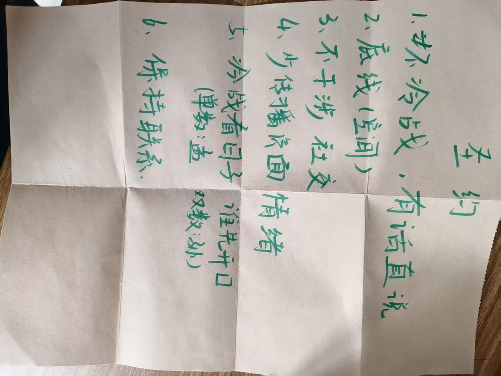
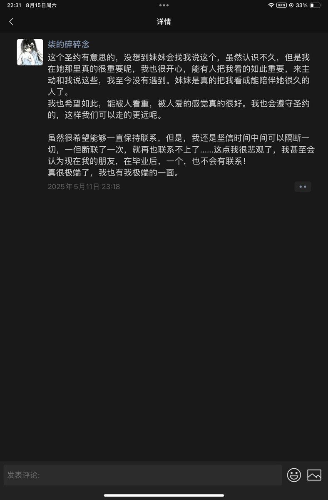

pr80.net 永夜安港
@pr80net
@zhiyeranxi 也是很认真的写了，扎鸡叔今天能不能让她中一下😭


凪夜染汐
@zhiyeranxi
@pr80net 来自一场出行的掉队相遇，诞生于同一天的我们相遇，能在遇到几天后缔结严肃的契约，性格想象的我们就这样结识。这是我一直想编辑的内容，不过能多去想，就想刚刚认识时，写下这条记录的悲观，我们最终还是分开了。我真的还好想不分开就好了 https://t.co/LW8eCpWj9o